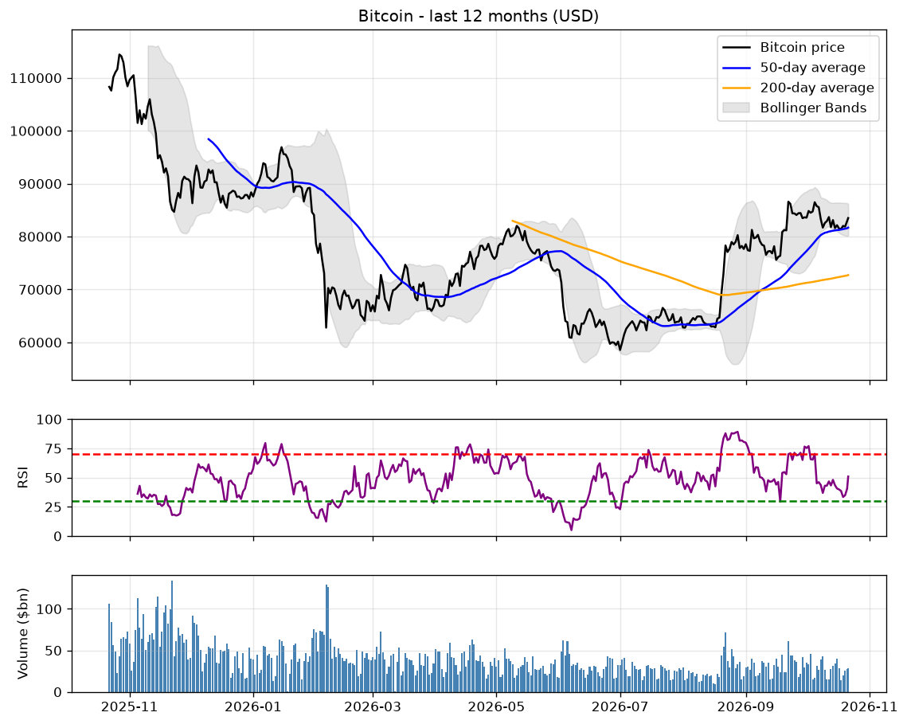
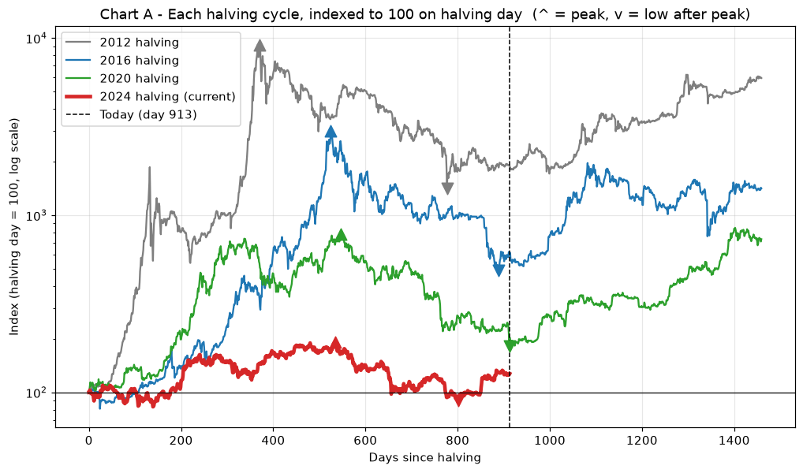
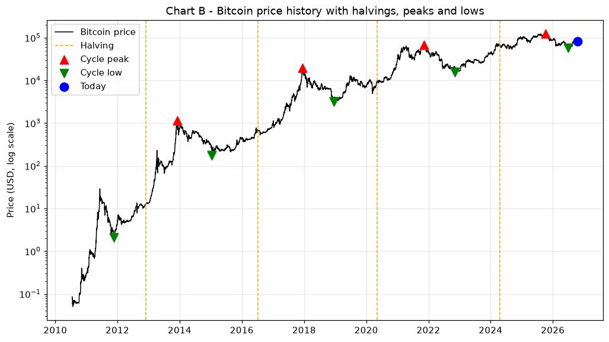
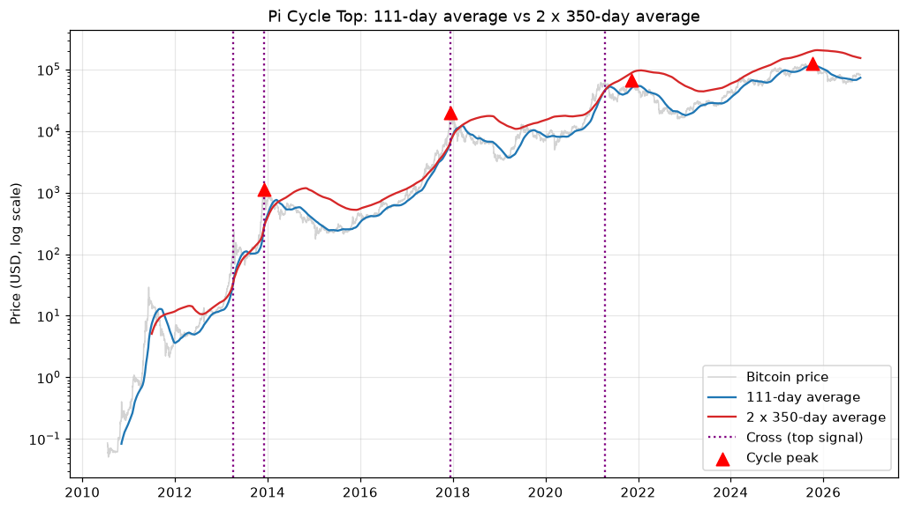
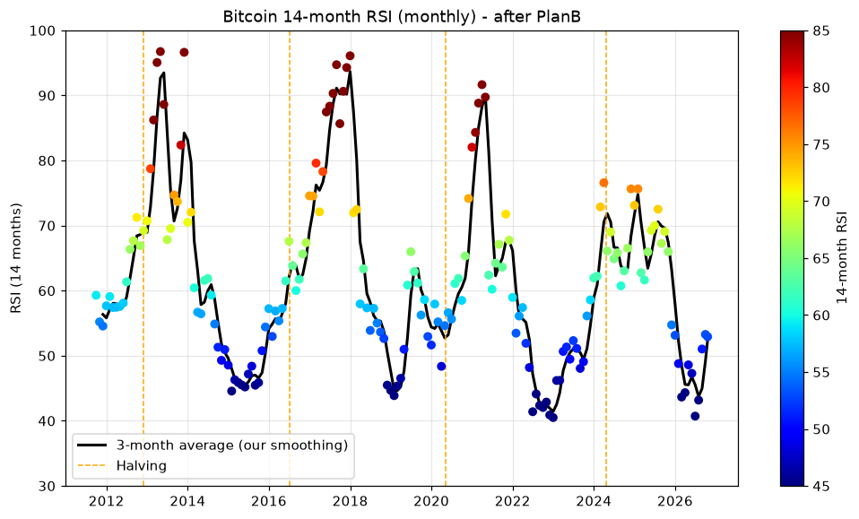
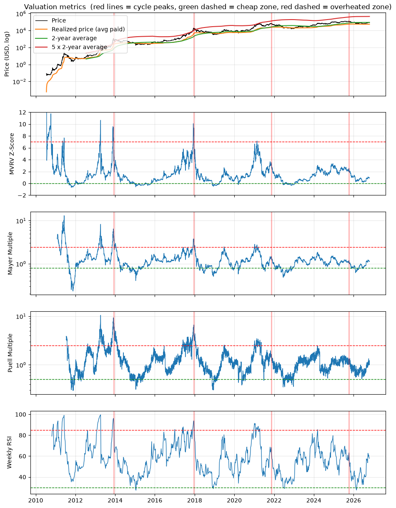

Bitcoin Report
Last updated: Wednesday 21 October 2026 at 12:32 · Price: $83,500
The big picture (20 October 2026)
Cycle-risk score: 33 / 100 · STATE 2 - Early or mid-cycle
Indicators are in the middle: not cheap like past bottoms, not hot like past tops. After a peak, this usually means recovery rather than overheating.
1. Where are we compared with past halving cycles?
Day 913 after the April 2024 halving. This cycle's high ($124,824 on 06 October 2025) came on day 534, in line with past peaks (days 371, 525, 546). Since then the price fell 53% and is now +42% above the June 2026 low. At this stage, every earlier cycle was already past its peak.
2. When could the next cycle top be?
If the October 2025 high was this cycle's top - as the timing suggests - history points to the next cycle top around September 2029 (range April 2029 to September 2029), 1 to 1.5 years after the next halving expected around March 2028. If instead the price rises above $124,824, this cycle's top is still ahead. The Pi Cycle is 52% away from a top signal. This is based on only 4 cycles, so treat it as a rough guide, not a forecast.
3. Which indicators support buying, holding or caution?
Look like past bottoms (support accumulation): MVRV Z-Score, 2-Year MA Multiplier, 14-month RSI. In the middle (support holding): MVRV, Mayer Multiple, Puell Multiple, Weekly RSI (14 weeks). Look like recent tops (call for caution): none.
How to read the bars: each indicator is scored from 0 (like past bear-market bottoms) to 100 (like recent cycle tops).
■ Green (0-29): looks cheap, like past bottoms · ■ Amber (30-70): in between, normal · ■ Red (71-100): looks hot, like past tops
| MVRV | 32 | In between | |
| MVRV Z-Score | 25 | Like past bottoms | |
| Mayer Multiple | 40 | In between | |
| 2-Year MA Multiplier | 14 | Like past bottoms | |
| Puell Multiple | 41 | In between | |
| Weekly RSI (14 weeks) | 52 | In between | |
| 14-month RSI | 24 | Like past bottoms | |
How the score works: each indicator is placed between its average level at past bear-market lows (0) and its average peak in the last two bull runs (100), then all are averaged. This is a rule-of-thumb score, not tested statistically, and not the probability of a crash or a top.
The big picture: BULL MARKET
Most long-term signals point up: Bitcoin is in an uptrend. Dips along the way are still normal.
Bull signs (5)
- Price is above the 200-day average ($72,727)
- The 50-day average is above the 200-day (golden cross)
- Price is well above the 200-week floor ($67,220)
- The 200-day average is rising
- Mood has been positive for a month (average 66)
Bear signs (1)
- Price is still 34% below the all-time high
Right now: what the indicators say
- Momentum (RSI): RSI is 51: neutral. No strong push either way.
- Trading activity (volume): Trading this week is normal (1.0x the usual level). The price is rising (+2.3% in 7 days).
- Market mood (Fear & Greed): Mood is 63/100 (Greed); the 30-day average is 66. People are optimistic. Normal in an uptrend, but worth watching if it climbs into extreme greed.
- Price range (Bollinger Bands): The price is in the upper half of its normal range: firm, but not stretched. The band is unusually narrow (a 'squeeze'). Big moves often follow, in either direction.
The chart

Key price levels
Levels above today's price are targets. Levels below are warning lines.
| $100,958 | Within 20% of the record high - bull market confirmed |
| $88,339 | Out of 'deep drop' territory |
| $83,500 | <-- PRICE TODAY |
| $81,695 | 50-day average - a normal pullback zone in an uptrend |
| $80,664 | Below here, the verdict likely drops to TRANSITION |
| $72,727 | 200-day average - below here the long-term trend turns down |
| $67,220 | 200-week floor - past bear markets bottomed near or below it |
Where could we be in 30 days?
Based on every 30-day period in the past year. This is history, not a forecast.
- Half the time: between $75,108 and $89,635
- 1 in 4 times: lower than $75,108
- 1 in 4 times: higher than $89,635
- Rare extremes (1 in 10): below $65,439 or above $97,972
If a bear market returns
How far past bear markets fell from their peak, applied to today's record high of $126,198. Bitcoin is currently 34% below its record.
| -50% | $63,099 | a mild bear market |
| -65% | $44,169 | a deep bear market |
| -77% | $29,026 | like the 2022 bear market |
| -84% | $20,192 | like the 2018 bear market |
How to read this report
- Moving average: the average price over the last X days, drawn as a smooth line. It shows the trend without the daily noise.
- Golden cross: the 50-day line rises above the 200-day line. Recent prices are beating the long-term trend, which has often come before or during bull runs.
- Death cross: the 50-day line falls below the 200-day line. A warning that has often come before longer declines.
- 200-week floor: the average price over about 4 years. Past bear markets bottomed near or below it, so it is seen as deep support.
- Bollinger Bands (grey area): the normal range for the price. Touching the top means stretched high; the bottom means stretched low; a very narrow band often comes before a big move.
- RSI (purple line): 0 to 100. Above 70 means it rose fast and may pause; below 30 means it fell fast and may bounce.
- Volume (blue bars): how much was traded. Big moves on high volume are more convincing than moves on low volume.
- Mood (Fear & Greed): how emotional the market is. Extreme fear has often been near bottoms, extreme greed near tops.
This report describes trends and history. It is not financial advice and cannot predict the future.
Cycle analysis
1. Where are we in the halving cycle?
Every four years the reward for mining new bitcoin is cut in half (the 'halving'). Past cycles followed a similar rhythm: a peak about 1 to 1.5 years after the halving, then a bear market. Chart A starts every cycle at 100 on halving day so they can be compared fairly; Chart B shows the whole price history.
What it says today- Today (2026-10-20) is day 913 after the 2024-04-20 halving. The price ($82,899) is +28% compared with halving day.
- At the same day after their halvings, the 2012 cycle was +1788% (already past its peak); the 2016 cycle was +512% (already past its peak); the 2020 cycle was +104% (already past its peak).
- This cycle's highest price so far is $124,824 on 2025-10-06, day 534. Earlier cycles peaked on days 371, 525, 546 after their halving.
- Since that high, the price fell -53% to $58,525 on 2026-06-30, and is now +42% above that low. In earlier cycles the bear-market low came 364 to 406 days after the peak; for this cycle that timing would be 2026-10-05 to 2026-11-16.
- Peak gain from the halving-day price, by cycle: 2012: x92.0, 2016: x30.1, 2020: x7.9, 2024: x1.9.
- This compares timing with past cycles only. It shows what happened before, not what must happen now.


2. Pi Cycle Top
Two averages: a fast one (111 days, blue) and a slow one (2 x 350 days, red). When the blue line rose above the red one, the market was overheating - in 2013 and 2017 this happened within days of the top.
What it says today- The 111-day average is $73,440 and twice the 350-day average is $153,345. The fast line is 52% below the slow line, and the two are getting closer together compared with 30 days ago (-57% then).
- A Pi Cycle top signal needs the fast line to cross ABOVE the slow line, so there is no top signal today.
- It has not crossed at all since the 2024-04-20 halving - including at the 2025-10-06 high - so this cycle's high was NOT flagged by this indicator.
- History: it crossed 4 times, and was within 30 days of 2 of the 4 cycle peaks.
- The gap between the lines is not a countdown: in the past the lines closed at very different speeds.

3. PlanB's 14-month RSI
A 'speedometer' for long-term momentum, from 0 to 100. Readings above about 90 came at past tops; readings in the low 40s came at past bear-market bottoms.
What it says today- The 14-month RSI is 53 this month (it was 43 three months ago, so it is rising). This month is not finished, so today's reading can still change.
- Past cycle tops reached 97, 96, 92. This cycle's highest reading was 76 - lower than every previous top, a weaker peak.
- Past bear markets bottomed at 45, 44, 40.
- Today's reading is between the past bottom and top zones - a middle stage of the cycle.
- In the last 6 months it fell to 41, inside the zone where past bear markets ended, and has since climbed to 53. In past cycles, climbing out of that zone came near the start of a recovery - but it can also dip back.
- Method: monthly closing prices, 14-month Wilder RSI, as labelled on PlanB's chart. The black line here is our own 3-month average; PlanB does not state how his line is smoothed.

4. Valuation: is Bitcoin cheap or expensive?
Six ways of comparing today's price with Bitcoin's own history. Green dashed lines show levels seen near past bottoms, red dashed lines levels seen near past tops.
What it says today- MVRV (market value / what holders paid on average) is 1.54: NORMAL. At past cycle peaks it was 4.7, 4.4, 2.9 (this cycle's high: 2.3); at past bear-market lows 0.6, 0.7, 0.8.
- MVRV Z-Score (how far market value is above what holders paid, in standard deviations) is 0.94: NORMAL. At past cycle peaks it was 7.7, 9.4, 3.5 (this cycle's high: 2.5); at past bear-market lows -0.6, -0.5, -0.4.
- Mayer Multiple (price / 200-day average) is 1.14: NORMAL. At past cycle peaks it was 5.7, 3.8, 1.5 (this cycle's high: 1.2); at past bear-market lows 0.4, 0.5, 0.7.
- 2-Year MA Multiplier (price / 2-year average (5x has marked past tops)) is 0.93: UNDERVALUED. At past cycle peaks it was 16.0, 10.0, 2.6 (this cycle's high: 1.6); at past bear-market lows 0.5, 0.6, 0.4.
- Puell Multiple (miners' daily income / its 1-year average) is 1.22: NORMAL. At past cycle peaks it was 8.2, 6.4, 1.5 (this cycle's high: 1.1); at past bear-market lows 0.3, 0.4, 0.5.
- Weekly RSI (14 weeks) (medium-term momentum, 0 to 100) is 57.90: NORMAL. At past cycle peaks it was 96.2, 93.6, 65.7 (this cycle's high: 57.2); at past bear-market lows 28.2, 28.7, 36.7.
- Realized Price (the average price holders paid) is $53,913; the price is +54% above it. Past bear markets bottomed near or below this level.
- Overall: 1 undervalued, 5 normal, 0 elevated, 0 overheated. Zone limits are commonly used rules of thumb, not guarantees.
- What this means: Bitcoin looks fairly valued - not cheap like at past bottoms, and far from expensive like at past tops.
